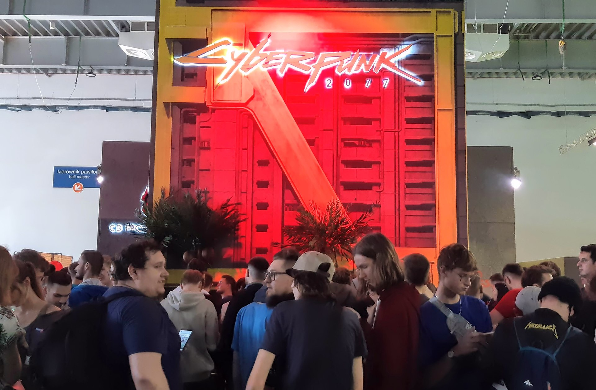

Świat gry
Night City jest amerykańskim megamiastem w Wolnym Stanie Kalifornia Północna, kontrolowanym przez korporacje, w którym nie obowiązują prawa krajowe i stanowe. Ogarnięte jest wojną gangów i rządzących nim osób, które walczą o dominację. W kwestiach codziennych, takich jak wywóz śmieci czy transport publiczny, mieszkańcy polegają na robotyce. Pod względem wizualnym ukształtowały je cztery epoki, które przeszło – surowy entropizm, kolorowy kicz, surowy neomilitaryzm i wystawny neokicz. Internet kontrolowany jest przez korporacje i wojsko. Chociaż w Night City powszechna jest bezdomność, nie wyklucza ona z możliwości korzystania z cybermodyfikacji, prowadząc do uzależnienia od kosmetycznych poprawek i przemocy. Z takimi zagrożeniami mierzy się uzbrojona organizacja znana jako Psycho Squad. Szybkiej pomocy medycznej udzielić może Trauma Team, zaś ze względu na bezustanne zagrożenie napaścią, wszyscy mieszkańcy mają prawo noszenia broni w miejscu publicznym
Produkcja
Preprodukcja Cyberpunk 2077, przy udziale około pięćdziesięcioosobowego zespołu, rozpoczęła się w 2016 roku, kiedy CD Projekt Red zakończył prace nad dodatkiem Krew i wino do Wiedźmina: Dzikiego Gonu. Ostatecznie nad grą pracował zespół większy niż nad Wiedźminem 3, w październiku 2019 roku liczący około 500 osób. Po zakończeniu prac nad Wiedźminem, studio rozpoczęło aktualizowanie silnika REDengine 3, żeby przystosować go do nowej gry. Na rozwój gry i związanych z nią technologii CD Projekt Red otrzymał od polskiego rządu granty w łącznej wysokości ok. 7 mln dolarów amerykańskich. W czerwcu 2017 roku wczesne szkice Cyberpunk 2077 zostały wykradzione przez hakerów, którzy zagrozili ich upublicznieniem, studio odmówiło jednak zapłacenia haraczu za nie. Pod koniec 2017 CD Projekt Red ogłosił, że osiągnęło jeden z kamieni milowych w pracach nad grą, z kolei w marcu 2018 otworzyło we Wrocławiu nowe studio, mające wspomóc je w produkcji. W październiku twórcy nawiązali współpracę z kanadyjskim Digital Scapes w celu opracowania dodatkowych narzędzi dla gry, a w czerwcu 2019 z Nvidią, w celu zaimplementowania technologii śledzenia promieni w czasie rzeczywistym, oraz w styczniu 2020 z QLOC, mającym zapewnić dodatkową kontrolę jakości.
Reżyser Cyberpunka 2077
Adam Badowski

Projektant Cyberpunka 2077
Paweł Sasko

Scenarzysta Cyberpunka 2077
Marcin Blacha
Odbiór
Cyberpunk 2077 zdobył ponad sto nagród na targach Electronic Entertainment Expo w 2018 roku, w tym m.in. dla najlepszej gry, najlepszej gry na Xboksa One, najlepszej gry na komputery osobiste i najlepszej gry fabularnej od serwisu IGN, najlepszej gry fabularnej i najlepszej gry targów od magazynu „Game Informer” oraz najlepszej gry targów od serwisu GamesRadar+ i magazynu „PC Gamer”. Chociaż drugi zwiastun gry zyskał miano najlepszego zaprezentowanego podczas targów, William Gibson, uznawany za pioniera podgatunku cyberpunk, określił go mianem „Grand Theft Auto ubranego w kliszowy retrofuturyzm w stylu lat 80.” W późniejszym czasie Gibson wyraził się jednak przychylnie o pierwszej wersji demonstracyjnej prezentującej rozgrywkę. Obiektem krytyki stała się perspektywa pierwszej osoby. Cyberpunk 2077 był najszerzej komentowaną grą Electronic Entertainment Expo 2019, podczas których zdobył nagrody dla najlepszej gry od GamesRadar+, „PC Gamera”, Rock, Paper, Shotgun i Ars Technica, jak również najlepszej gry, najlepszej gry na PlayStation 4, najlepszej gry na Xboksa One, najlepszej gry na komputery osobiste i najlepszej gry fabularnej od IGN. Trzeci zwiastun zdobył powszechny rozgłos ze względu na ujawnienie, że w produkcję gry zaangażowany był Reeves
Sprzedaż
Na Cyberpunk 2077 złożono więcej zamówień przedpremierowych, niż na Wiedźmina: Dziki Gon, a jedną trzecią egzemplarzy na komputerach osobistych sprzedano za pośrednictwem należącej do CD Projektu platformy GOG.com. Gra była bestsellerem w chińskiej wersji klienta Steam.
Koszt produkcji
Według raportu CD Projektu dotyczącego III kwartału (do września) 2020 łączny koszt produkcji i reklamy Cyberpunka 2077 wyniósł 522,7 mln złotych
Kontrowersje
Twórcy gry kilkakrotnie oskarżeni zostali przez część amerykańskich dziennikarzy i internautów o transfobię. W sierpniu 2018 roku na oficjalnym profilu w serwisie Twitter, w odpowiedzi na komentarz jednego z użytkowników, zamieszczono parafrazę memu internetowego „Did You Just Assume My Gender?”, służącego do wyszydzania osób transpłciowych. W czerwcu 2019 na jednym z materiałów promocyjnych gry widoczny był znajdujący się w świecie gry plakat opatrzony sloganem „Wymieszaj to!”, na którym przedstawiono osobę o kobiecych rysach, mającą jednocześnie piersi i penisa. Katarzyna Redasiuk, jedna ze scenarzystek Cyberpunk 2077, przyznała, że plakat rzeczywiście przedstawia osobę transpłciową, było to jednak działanie celowe, mające odzwierciedlać sposób, w jaki korporacje 2077 roku patrzą na ludzi. Niedługo później CD Projekt Red zapowiedział, że gra zrezygnuje ze sztywnego podziału na płeć męską i żeńską, pozwalając graczom na dowolność. Również w czerwcu 2019 twórcy oskarżeni zostali o rasizm. Dziennikarz serwisu Rock, Paper, Shotgun, opisując wrażenia z pokazu gry, zauważył, że nazywanie czarnoskórego gangu „Animals” (pol. Zwierzęta) jest nie na miejscu i służy utrwalaniu stereotypów. Temat został podchwycony przez media i internautów, którzy zarzucili CD Projekt Red m.in. to, że Mike Pondsmith nie jest zaangażowany w tworzenie Cyberpunk 2077, w przeciwnym razie nie zgodziłby się na tak rasistowskie odniesienia do osób czarnoskórych. Pondsmith odniósł się do tych zarzutów, stwierdzając, że jeśli nie byłby zaangażowany w projekt, to miałby więcej czasu, a obecnie „praktycznie nie ma życia”. Zapewnił też, że zaprojektowany przez niego świat został wiarygodnie odwzorowany w kwestii rasizmu. W 2020 roku, odnosząc się do ruchu Black Lives Matter, stwierdził: „Cyberpunk był ostrzeżeniem, nie inspiracją”.
Stoisko Cyberpunk 2077 na targach Poznań Game Arena 2019